Data: mobility, ecology and epidemics
Source:vignettes/articles/data-mobility-ecology.Rmd
data-mobility-ecology.RmdMovements between places (bike stations, airports), species reaching
new regions, and transmission between people. Bike and flight data have
strong daily cycles and suit global covariates such as weather; invasion
records are one-shot species-to-region events for
risk = "remove"; transmission chains are trees.
The data catalogue lists every dataset with its licence. Figures and numbers on this page are aggregates computed from the files as published; each section links the source and the code that reads it.
| dataset | events | actors | licence | amorem |
|---|---|---|---|---|
| TfL Santander Cycles journeys, February 2026 | 550,273 | 805 | Open Government Licence v2.0 (TfL) | can bundle |
| OpenSky COVID-19 flight list, April 2020 | 458,022 | 10,635 | CC BY 4.0 | can bundle |
| Alien species first records prepared for REMs (Juozaitienė et al.) | 11,730 | 3,188 | CC0 1.0 | bundled as alien_invasions
|
| Alien Species First Records Database v4.0 (Seebens et al.) | 90,023 | 29,091 | CC BY 4.0 | can bundle |
| COVID-19 transmission chains, Bucharest | 13,377 | 19,713 | CC BY 4.0 | can bundle |
TfL Santander Cycles journeys, February 2026
Source: https://tfl.gov.uk/corporate/terms-and-conditions/transport-data-service · Licence: Open Government Licence v2.0 (TfL) · Status in amorem: may be redistributed with attribution.
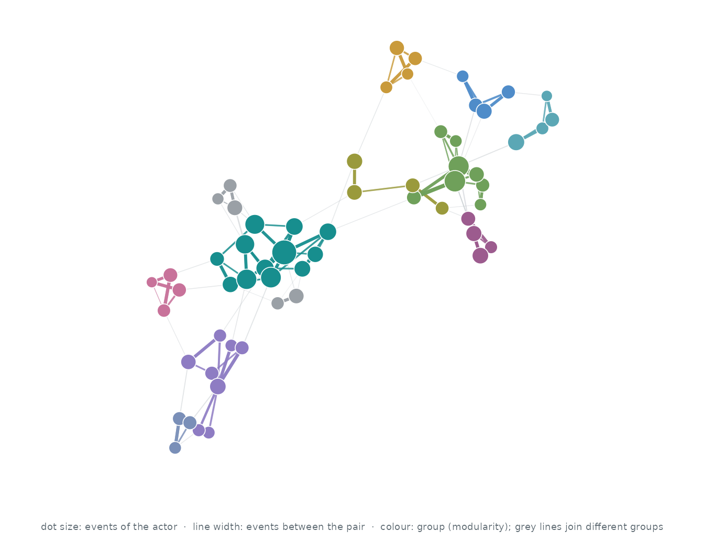
Who interacts with whom. The 60 actors of the busiest pairs, out of 805; events between two of them are 2.5% of all events. Each actor’s three strongest ties are drawn (117 of 722 pairs that ever interacted): wider, darker lines carry more events, larger dots are more active actors, and colours are groups found by modularity (Louvain).
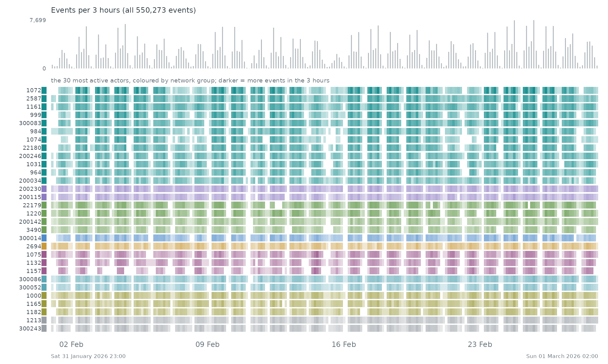
When. Each row is one of the 30 most active actors of the network, coloured by its group there; a cell is darker the more events (with anyone) the actor took part in during that stretch of time. The grey bars on top count all 550,273 events.
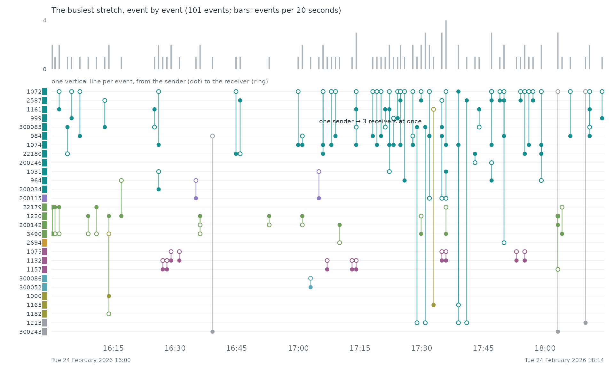
Event by event. The busiest stretch of the record, Tue 24 February 2026 16:00 to Tue 24 February 2026 18:14, event by event: each vertical line is one event between two of the actors above, from the sender (dot) to the receiver (ring).
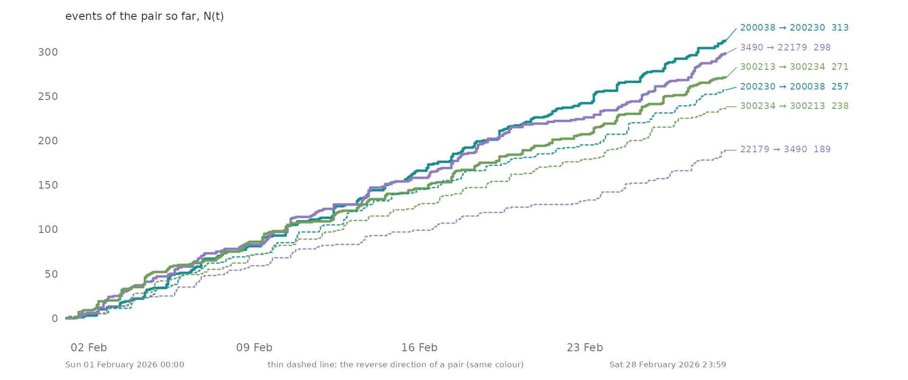
Pairs as counting processes. The counting process N(t) of the 6 busiest pairs: the number of events of the pair up to time t. Together they make 0.3% of all events. Steep stretches are bursts and flat ones silences. 6 of these pairs are the reverse of another, so replies run alongside the messages they answer.
Statistical profile.
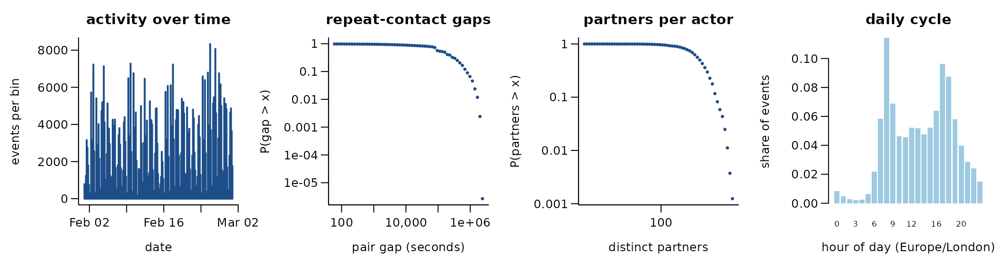
550,273 directed events among 805 actors over 28.0 days (160,736 distinct ordered pairs). 70.8% of events repeat an earlier ordered pair; if every event chose a pair at random the share would be 32.6%. 64.6% of events answer an earlier event in the opposite direction. The burstiness coefficient of the gaps between successive events of the same pair is 0.11 (0 for a Poisson process, positive when events cluster in bursts); the most active tenth of the actors take part in 23.2% of events (Gini 0.30). 93.4% of events share their time stamp with an earlier one. station -> station journeys, February 2026
A conditional logit on the first 4,000 events (one sampled control per event) gives:
| term | estimate | s.e. |
|---|---|---|
| log(1 + sender’s past events) | 0.49 | 0.04 |
| log(1 + receiver’s past events received) | 0.62 | 0.04 |
| log(1 + past events receiver -> sender) | 3.91 | 0.36 |
Get the data
download.file("https://cycling.data.tfl.gov.uk/usage-stats/437JourneyDataExtract01Feb2026-14Feb2026.csv", "437JourneyDataExtract01Feb2026-14Feb2026.csv", mode = "wb")
download.file("https://cycling.data.tfl.gov.uk/usage-stats/438JourneyDataExtract15Feb2026-28Feb2026.csv", "438JourneyDataExtract15Feb2026-28Feb2026.csv", mode = "wb")A reader that turns these files into a
(sender, receiver, time) table is
readers[["tfl-cycle-hire-2026-02"]] in data-raw/catalogue/readers.R.
OpenSky COVID-19 flight list, April 2020
Source: https://doi.org/10.5281/zenodo.4088205 · Licence: CC BY 4.0 · Status in amorem: may be redistributed with attribution.
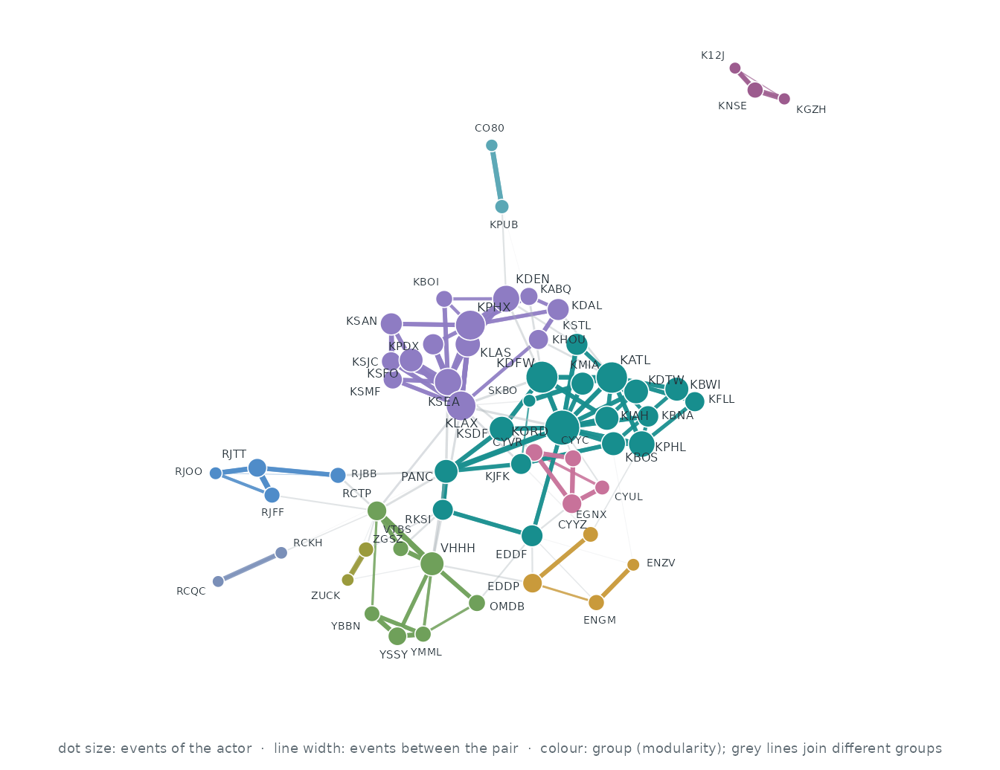
Who interacts with whom. The 60 actors of the busiest pairs, out of 10,635; events between two of them are 16.0% of all events. Each actor’s three strongest ties are drawn (134 of 613 pairs that ever interacted): wider, darker lines carry more events, larger dots are more active actors, and colours are groups found by modularity (Louvain).
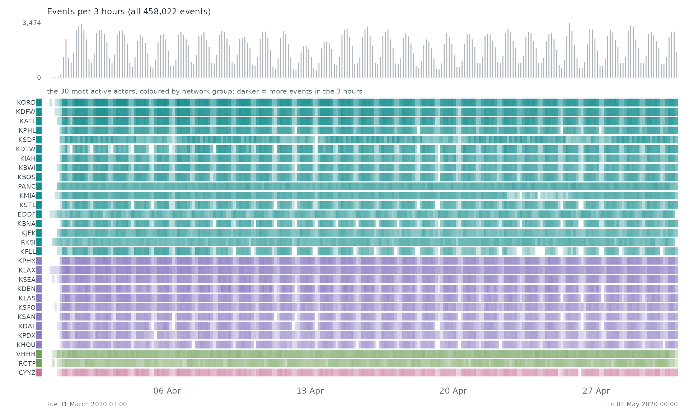
When. Each row is one of the 30 most active actors of the network, coloured by its group there; a cell is darker the more events (with anyone) the actor took part in during that stretch of time. The grey bars on top count all 458,022 events.
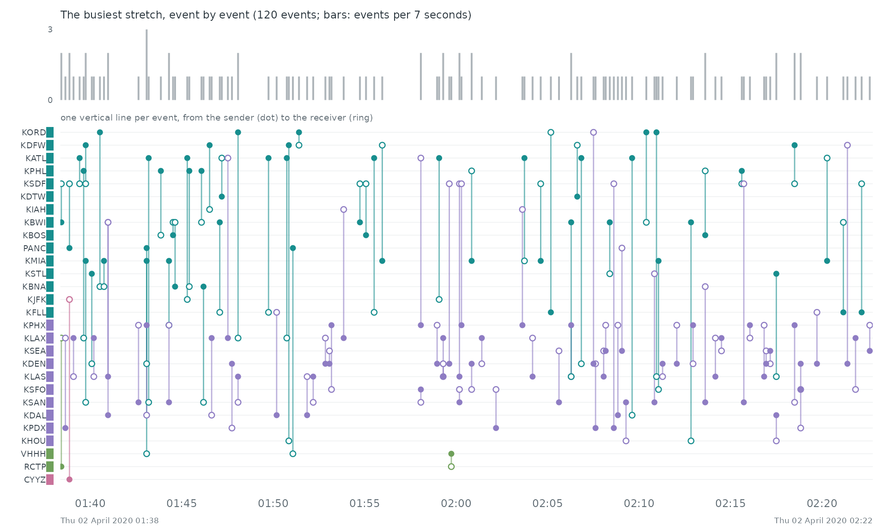
Event by event. The busiest stretch of the record, Thu 02 April 2020 01:38 to Thu 02 April 2020 02:22, event by event: each vertical line is one event between two of the actors above, from the sender (dot) to the receiver (ring).
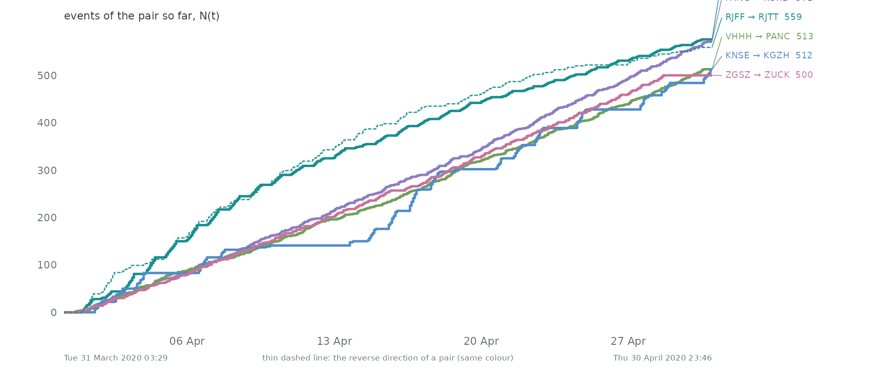
Pairs as counting processes. The counting process N(t) of the 6 busiest pairs: the number of events of the pair up to time t. Together they make 0.7% of all events. Steep stretches are bursts and flat ones silences. 2 of these pairs are the reverse of another, so replies run alongside the messages they answer.
Statistical profile.
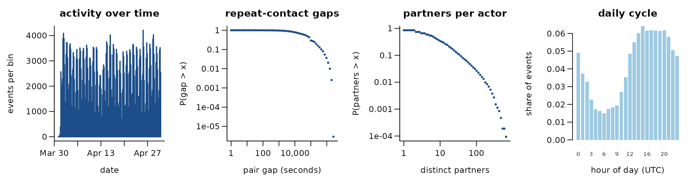
458,022 directed events among 10,635 actors over 30.8 days (111,243 distinct ordered pairs). 75.7% of events repeat an earlier ordered pair; if every event chose a pair at random the share would be 0.2%. 67.4% of events answer an earlier event in the opposite direction. The burstiness coefficient of the gaps between successive events of the same pair is 0.29 (0 for a Poisson process, positive when events cluster in bursts); the most active tenth of the actors take part in 82.2% of events (Gini 0.87). flights between airports, April 2020
A conditional logit on the first 4,000 events (one sampled control per event) gives:
| term | estimate | s.e. |
|---|---|---|
| log(1 + sender’s past events) | 1.03 | 0.05 |
| log(1 + receiver’s past events received) | 0.90 | 0.05 |
| log(1 + past events receiver -> sender) | 4.98 | 0.81 |
Get the data
download.file("https://zenodo.org/api/records/4088205/files/readme.md/content", "content", mode = "wb")
download.file("https://zenodo.org/api/records/4088205/files/flightlist_20200401_20200430.csv.gz/content", "content", mode = "wb")
download.file("https://zenodo.org/api/records/4088205", "4088205", mode = "wb")A reader that turns these files into a
(sender, receiver, time) table is
readers[["opensky-covid-flightlist-2020-04"]] in data-raw/catalogue/readers.R.
Alien species first records prepared for REMs (Juozaitienė et al.)
Source: https://doi.org/10.5061/dryad.x69p8czpv ·
Licence: CC0 1.0 · Status in amorem: bundled as
alien_invasions.
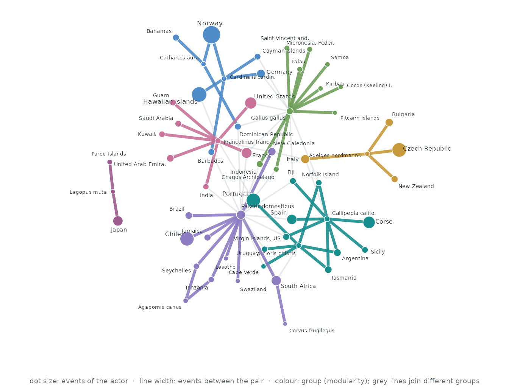
Who interacts with whom. The 60 actors of the busiest pairs, out of 3,188; events between two of them are 0.7% of all events. Each actor’s three strongest ties are drawn (81 of 82 pairs that ever interacted): wider, darker lines carry more events, larger dots are more active actors, and colours are groups found by modularity (Louvain).
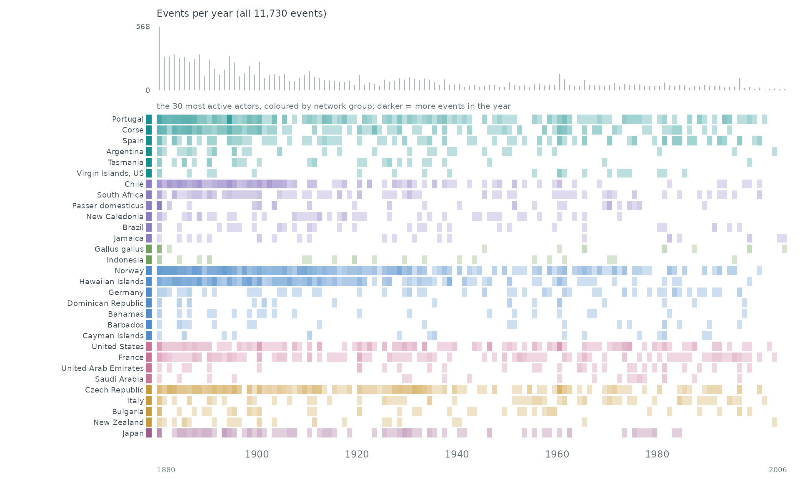
When. Each row is one of the 30 most active actors of the network, coloured by its group there; a cell is darker the more events (with anyone) the actor took part in during that stretch of time. The grey bars on top count all 11,730 events.
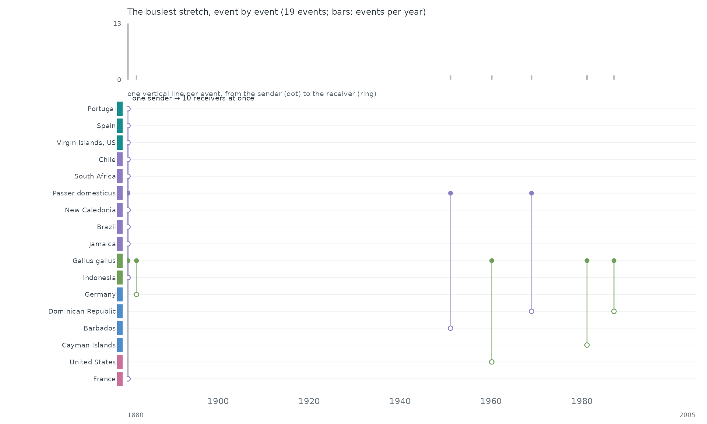
Event by event. The busiest stretch of the record, 1880 to 2005, event by event: each vertical line is one event between two of the actors above, from the sender (dot) to the receiver (ring).
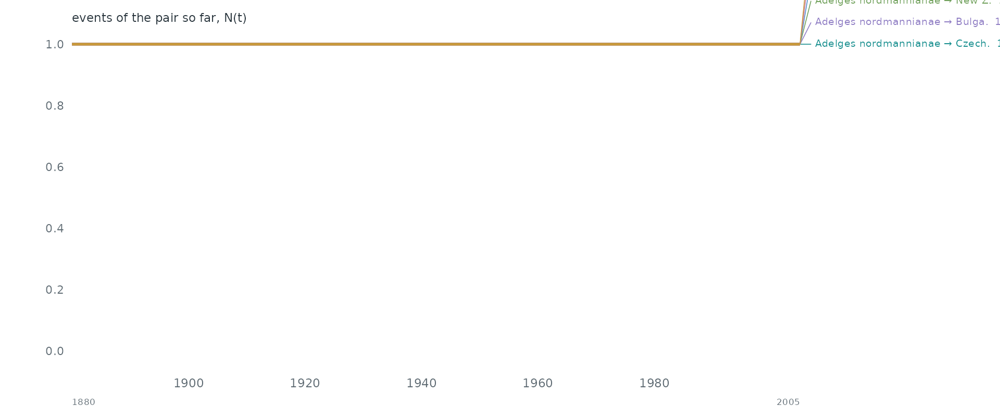
Pairs as counting processes. The counting process N(t) of the 6 busiest pairs: the number of events of the pair up to time t. Together they make 0.1% of all events. Steep stretches are bursts and flat ones silences.
Statistical profile.
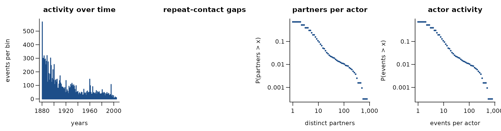
11,730 directed events among 3,188 actors over 125.0 years (11,730 distinct ordered pairs). 0.0% of events repeat an earlier ordered pair; if every event chose a pair at random the share would be 0.1%. 0.0% of events answer an earlier event in the opposite direction. The burstiness coefficient of the gaps between successive events of the same pair is NA (0 for a Poisson process, positive when events cluster in bursts); the most active tenth of the actors take part in 62.7% of events (Gini 0.70). 98.9% of events share their time stamp with an earlier one. one-shot species -> country first records (risk = “remove”), start of the recording interval
A conditional logit on the first 4,000 events (one sampled control per event) gives:
| term | estimate | s.e. |
|---|---|---|
| log(1 + sender’s past events) | -0.63 | 0.12 |
| log(1 + receiver’s past events received) | 1.97 | 0.11 |
| log(1 + past events receiver -> sender) | -14.82 | 3045.34 |
These coefficients reflect how the data are built, not behaviour: species reach regions, so reciprocity is impossible and each pair fires once.
Get the data
download.file("https://zenodo.org/records/8096819/files/species_data.csv?download=1", "species_data.csv", mode = "wb")
download.file("https://zenodo.org/records/8096819/files/README.md?download=1", "README.md", mode = "wb")A reader that turns these files into a
(sender, receiver, time) table is
readers[["alien-species-first-records-rem"]] in data-raw/catalogue/readers.R.
Alien Species First Records Database v4.0 (Seebens et al.)
Source: https://zenodo.org/records/18759840 · Licence: CC BY 4.0 · Status in amorem: may be redistributed with attribution.
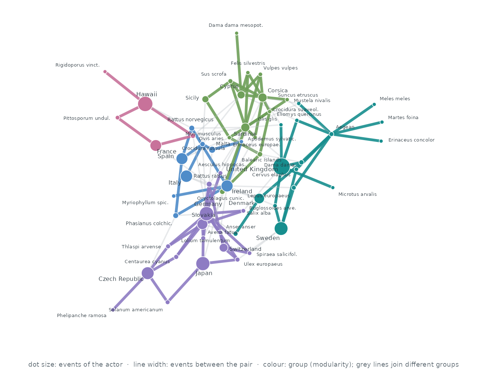
Who interacts with whom. The 60 actors of the busiest pairs, out of 29,091; events between two of them are 0.3% of all events. Each actor’s three strongest ties are drawn (123 of 232 pairs that ever interacted): wider, darker lines carry more events, larger dots are more active actors, and colours are groups found by modularity (Louvain).
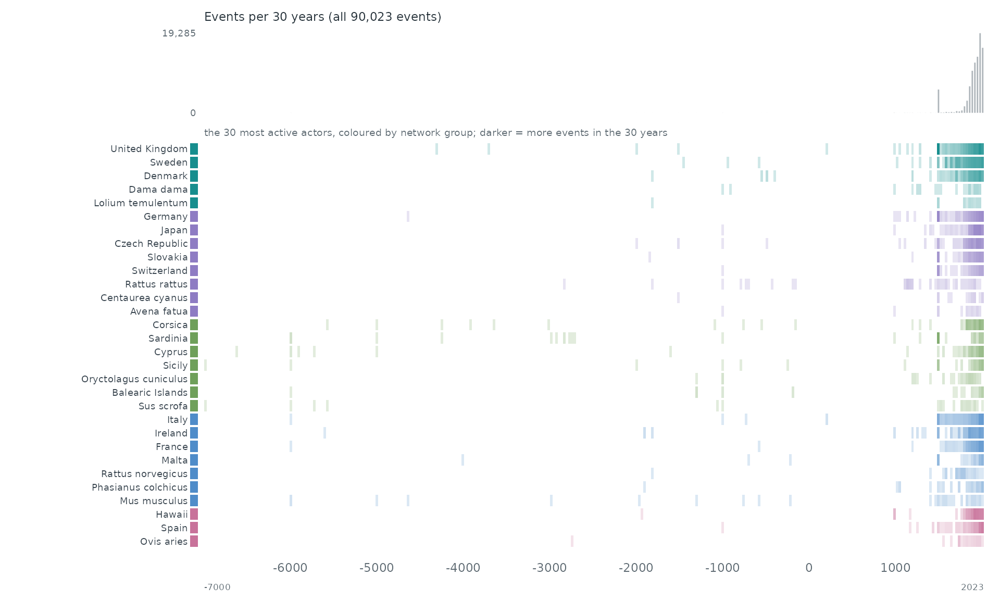
When. Each row is one of the 30 most active actors of the network, coloured by its group there; a cell is darker the more events (with anyone) the actor took part in during that stretch of time. The grey bars on top count all 90,023 events.
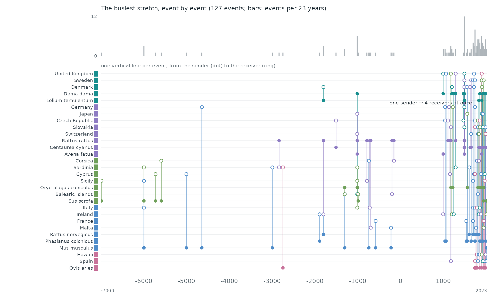
Event by event. The busiest stretch of the record, -7000 to 2023, event by event: each vertical line is one event between two of the actors above, from the sender (dot) to the receiver (ring).
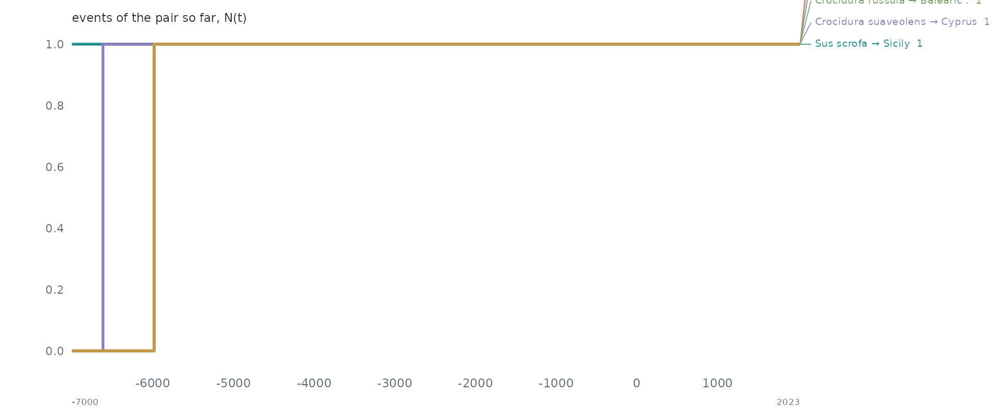
Pairs as counting processes. The counting process N(t) of the 6 busiest pairs: the number of events of the pair up to time t. Together they make 0.0% of all events. Steep stretches are bursts and flat ones silences.
Statistical profile.
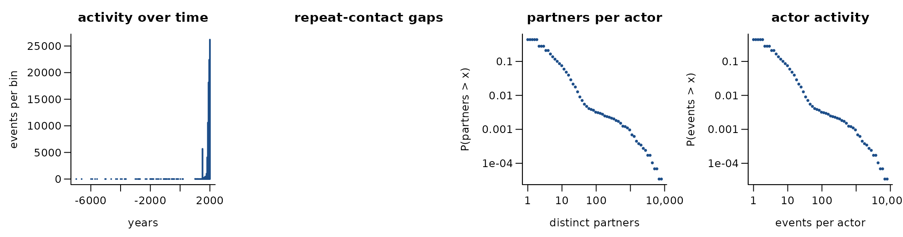
90,023 directed events among 29,091 actors over 9,023.0 years (90,023 distinct ordered pairs). 0.0% of events repeat an earlier ordered pair; if every event chose a pair at random the share would be 0.0%. 0.0% of events answer an earlier event in the opposite direction. The burstiness coefficient of the gaps between successive events of the same pair is NA (0 for a Poisson process, positive when events cluster in bursts); the most active tenth of the actors take part in 73.4% of events (Gini 0.77). 99.2% of events share their time stamp with an earlier one. one-shot taxon -> region first records; rows with a non-numeric year dropped
A conditional logit on the first 4,000 events (one sampled control per event) gives:
| term | estimate | s.e. |
|---|---|---|
| log(1 + sender’s past events) | 0.93 | 0.20 |
| log(1 + receiver’s past events received) | 3.58 | 0.22 |
| log(1 + past events receiver -> sender) | -3.58 | 4759.80 |
These coefficients reflect how the data are built, not behaviour: species reach regions, so reciprocity is impossible and each pair fires once.
Get the data
download.file("https://zenodo.org/records/18759840/files/FirstRecords_dataset_public_v4.0.csv?download=1", "FirstRecords_dataset_public_v4.0.csv", mode = "wb")
download.file("https://zenodo.org/records/18759840/files/FirstRecords_dataset_sources_v4.0.csv?download=1", "FirstRecords_dataset_sources_v4.0.csv", mode = "wb")
download.file("https://zenodo.org/records/18759840/files/FirstRecords_location_table_public_v4.0.csv?download=1", "FirstRecords_location_table_public_v4.0.csv", mode = "wb")
download.file("https://zenodo.org/records/18759840/files/FirstRecords_taxonomy_table_public_v4.0.csv?download=1", "FirstRecords_taxonomy_table_public_v4.0.csv", mode = "wb")
download.file("https://zenodo.org/records/18759840/files/FirstRecords_raw_dataset_public_v4.0.xlsx?download=1", "FirstRecords_raw_dataset_public_v4.0.xlsx", mode = "wb")A reader that turns these files into a
(sender, receiver, time) table is
readers[["alien-first-records-v4"]] in data-raw/catalogue/readers.R.
COVID-19 transmission chains, Bucharest
Source: https://doi.org/10.5281/zenodo.6899738 · Licence: CC BY 4.0 · Status in amorem: may be redistributed with attribution.
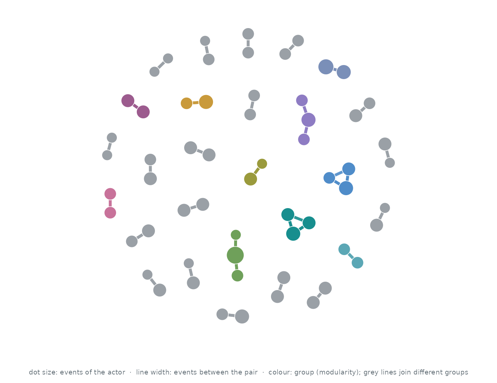
Who interacts with whom. The 60 actors of the busiest pairs, out of 19,713; events between two of them are 0.5% of all events. Each actor’s three strongest ties are drawn (34 of 34 pairs that ever interacted): wider, darker lines carry more events, larger dots are more active actors, and colours are groups found by modularity (Louvain).
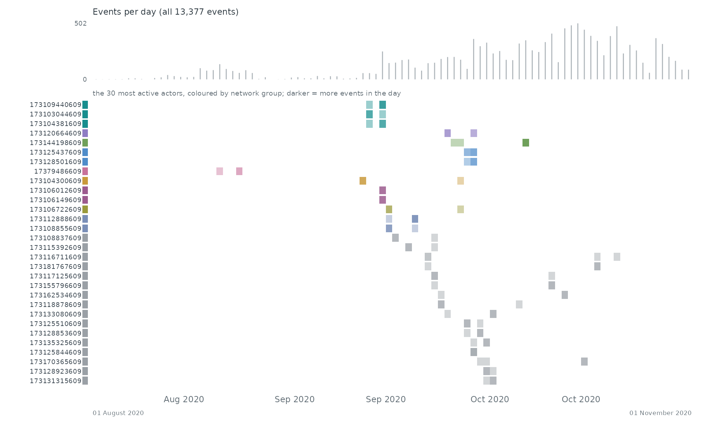
When. Each row is one of the 30 most active actors of the network, coloured by its group there; a cell is darker the more events (with anyone) the actor took part in during that stretch of time. The grey bars on top count all 13,377 events.
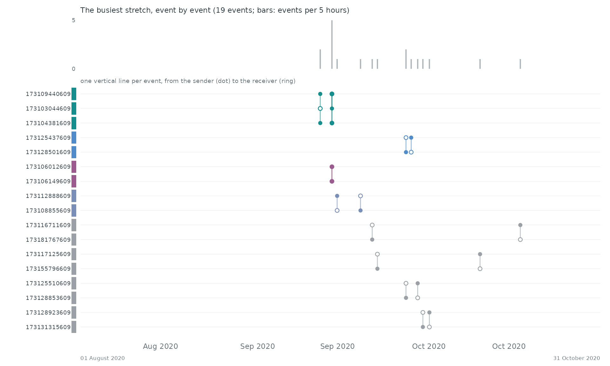
Event by event. The busiest stretch of the record, 01 August 2020 to 31 October 2020, event by event: each vertical line is one event between two of the actors above, from the sender (dot) to the receiver (ring).
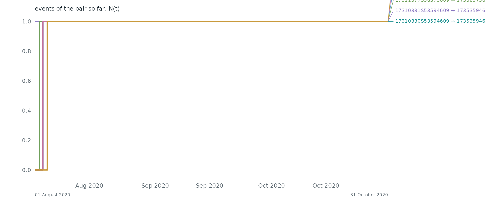
Pairs as counting processes. The counting process N(t) of the 6 busiest pairs: the number of events of the pair up to time t. Together they make 0.0% of all events. Steep stretches are bursts and flat ones silences.
Statistical profile.
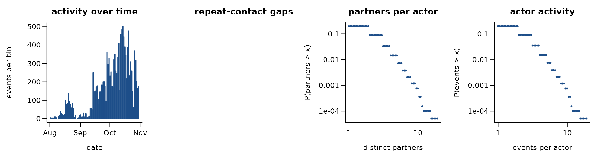
13,377 directed events among 19,713 actors over 91.0 days (13,377 distinct ordered pairs). 0.0% of events repeat an earlier ordered pair; if every event chose a pair at random the share would be 0.0%. 0.4% of events answer an earlier event in the opposite direction. The burstiness coefficient of the gaps between successive events of the same pair is NA (0 for a Poisson process, positive when events cluster in bursts); the most active tenth of the actors take part in 26.4% of events (Gini 0.23). 99.3% of events share their time stamp with an earlier one. referral (likely source) -> referee (case), at the referee’s confirmation date in 2020; days since 1970-01-01
A conditional logit on the first 4,000 events (one sampled control per event) gives:
| term | estimate | s.e. |
|---|---|---|
| log(1 + sender’s past events) | -6.58 | 0.46 |
| log(1 + receiver’s past events received) | -26.43 | 877.43 |
| log(1 + past events receiver -> sender) | 27.54 | 7582.47 |
These coefficients reflect how the data are built, not behaviour: each person is infected once, so the receiver’s past events are 0 at every event.
Get the data
download.file("https://zenodo.org/records/6899738/files/replication_data_clean_version.xlsx?download=1", "replication_data_clean_version.xlsx", mode = "wb")A reader that turns these files into a
(sender, receiver, time) table is
readers[["covid-bucharest-transmission"]] in data-raw/catalogue/readers.R.